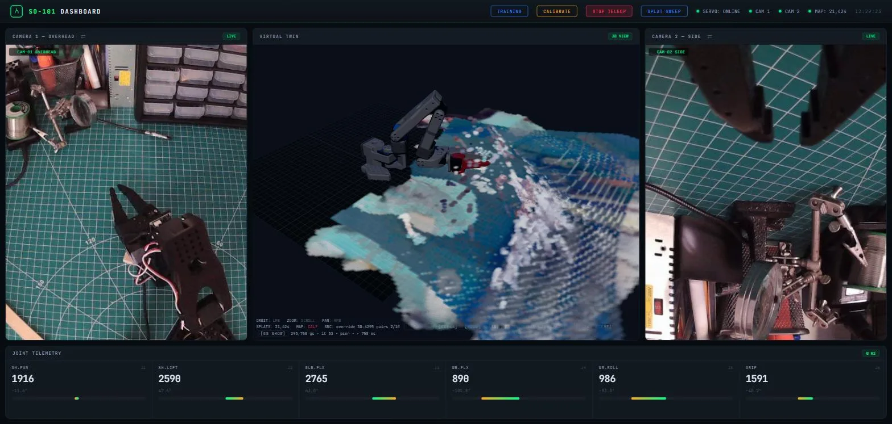
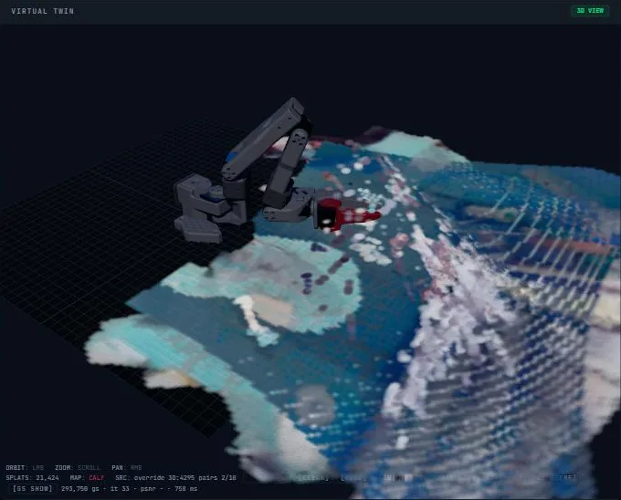

What's on the bench
Most of the first week went into making the stock LeRobot setup behave on Windows. The things that actually cost time:
- Serial ports. Bluetooth had claimed COM3–COM6 and Windows gave the two identical CH343 servo boards duplicate names. I pinned each board's port number to its USB serial in the registry; they now survive replugging.
- Calibration. The leader's shoulder-pan horn is clocked so its mechanical mid-travel sits at encoder count 4092 — two counts under the 4094 ceiling the calibration routine allows — so calibration failed with
Magnitude exceeds 2047. Parking that joint off-centre (~3800) before calibrating fixes it and costs no range of motion, since the sweep records the real min/max anyway. - Servo bus. Teleop dropped out on bus errors, so I patched a retry into the bus layer and run teleop through a small wrapper instead of the stock command.
- USB. Both cameras and one servo board share a single USB 2 hub. The wrist camera's stream wedges for ~10 s whenever the arm moves (a cable/connector issue at the wrist). The mapper waits for an accepted frame rather than mapping from a stale one; the real fix is the cable.
One page to run the rig from
I wanted to see the arm, the cameras, and the training runs in one place, from any device, without a terminal open. The dashboard is a Python server on the desktop and a Three.js page:
- Live overhead and wrist feeds, with a swap button because Windows re-enumerates the two identical cameras in a different order after any USB disturbance.
- A virtual twin of the follower driven from the URDF and the servo telemetry (8 Hz), standing on the 3D map from the next section.
- Calibrate, teleop, record, and train from the browser. The training panel builds the LeRobot record/train commands and validates them by parsing them with LeRobot's own config classes before anything runs.

Mapping the bench from the wrist camera
Goal: while the arm sweeps, build a 3D map of the workspace inside the twin — with no markers, no fiducials, and no dependence on my cutting mat, so the same code works on anyone's SO-101. Camera pose comes from the arm's forward kinematics (FK); geometry comes from a learned depth model rather than per-scene optimisation.
Per keyframe:
- undistort
- mask the arm out via URDF
- MoGe-2 monocular depth
- rectify depth to the FK table plane
- surfel fusion, best view per region
- render as splats
About 1.4 s per frame on the 1080 Ti; one 28-view sweep takes ~90 s and gives a ghost-free scene.

| What I measured | Result | What it changed |
|---|---|---|
| FK rotation error | 0.2 – 0.8° | Good enough to use FK as the pose prior. |
| FK translation error | 3 – 22 mm, median 8 | Not good enough on its own; measured against a mat-grid anchor I use only for development. |
| MoGe-2 support-plane tilt | 1 – 4° | Correcting the pose to that plane made things worse; correcting the depth with a per-pixel ratio field fitted on FK-plane pixels brings on-plane error to 0.2 – 0.8 mm. A plain scale+shift is degenerate on one plane. |
| View-to-view surface disagreement | 5 – 25 mm | Even with ~1 mm poses, MoGe surfaces disagree between viewpoints — so ICP, guided SIFT PnP, and bird's-eye ECC tracking all failed to beat FK and are switched off. Keeping the best view per region instead of averaging is what removed the ghosting. |
| Splat size vs. viewer | ≥ ~2.5 mm | Below that the viewer silently draws nothing at bench distance. |
Teaching it to stack Jenga blocks
The first policy the arm learns will be pick-and-place: build a tower from a pile of loose Jenga blocks, as high as it can reach, and recover when blocks fall. I picked it over the obvious "play Jenga" for concrete reasons:
- ±5 mm tolerances and a task that is already known to work on this class of arm.
- Progress is fully visible in the images, so a memoryless reactive policy (ACT) doesn't need to count blocks — it reads the tower top and the pile.
- Every placement in an episode is a distinct (observation, action) situation, so one full-tower episode is many demonstrations.
- Recovery is designed in: 2–3 failures are injected per episode and fumbled episodes are never re-recorded, because recovery data is the point.
Pulling blocks out of a real tower is explicitly out of scope for now. Every published robot that has done it used force/torque sensing to tell a loose block from a stuck one, and the STS3215's load register is unlikely to resolve the ~0.3 N that matters. Vision alone can't tell the difference.
Plan. ACT first, Diffusion Policy second. Training measures 0.40 s/step at batch 8 with two 640×480 cameras on the 1080 Ti — so 30k steps is about 3.3 h. A first checkpoint after 20 six-layer episodes (~360 pick-place cycles); 50–70 episodes total, with one DAgger-style correction round. Honest expectation for a first pass: 40–70 % success on the simplest level.
Where it is. A 15-minute teleop trial says the task is doable on this rig. CUDA training is verified on a synthetic dataset. Recording hasn't started, and no learned policy has run on the real arm yet.
Timeline
- 4 Sep 2026Both arms built, COM ports pinned, leader and follower calibrated.
- 8 SepPrinter status wired into the dashboard.
- 10 SepCamera routing and the swap fix; live-map project started; dashboard reachable remotely.
- 11 SepFirst 41-keyframe dataset from a real sweep — the ground truth for offline development.
- 13 SepReconstruction engine v2 (MoGe-2 depth + plane rectification + best-view surfel fusion). First ghost-free scene from one sweep.
- 14 SepCUDA training verified end to end on a synthetic dataset; Jenga task chosen and specced.